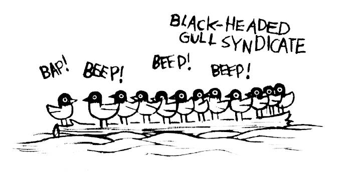
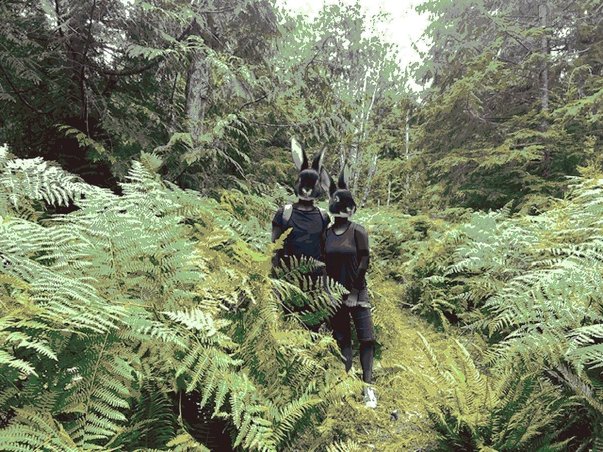

About
About Projects
Projects Books
Books Games
Games Stories
Stories Store
Store Notes
Notes How-to
How-to2024-09-19 September musings
SAILING. Where's Pino now? We are anchored on Galiano Island, comfortably nested in the Gulf Islands of British Columbia. We spent time in Melanie Cove earlier this month too. We wanted a taste of summer weather, we got it. Some days were very warm, too warm to hike. Pino will be returning to the Victoria docks in the fall, we look forward to it, to seeing our friends.
I started to transcribe the entries of my logbook digitally, I already published the first two weeks of our trip from Victoria to Sitka. As promised, the log features many silly doodles. Silly doodles are my lifeblood. People who have already read through the log told me how much they liked the black-headed gull syndicate. I have many more weeks to transcribe, it will take a while!
BOOKS. Earlier this month, I finished reading Arthur Conan Doyle's The Adventures of Sherlock Holmes. I really enjoyed it, while being familiar with the character - I think most of the English speaking world is - it was my first time reading any of his stories. I love Watson’s constant amazement of Holmes’s observation and deducting skills. “My dear Holmes!” He’d often say, awestruck, after hearing Holmes detail the life a client he’d just met with great accuracy.
I recommend it, although the fact that he casually takes cocaine was a bit jarring. It was a "hip" thing to do in 19th century England. At the time, it wasn't all that well understood, not until the early 20th century. When the dangers of taking cocaine became known, Arthur C. D. adapted the story, with Watson helping to wean Holmes off the drug. The author uses words that are at times surprising, like saying "he ejaculated" after a character speaks in a sudden manner. Ejaculated has always had multiple meanings, but now most people would hesitate to use it for anything other than to "eject semen."
I am still reading through Don Norman's book The Design of Everyday Things. This book has had a profound effect upon me. When interacting with objects I now obssess over the design, whether it has flaws, and if I were its designer, I wonder how I would correct those flaws. It is a wonder how so many terrible products end up in people's hands. Because I enjoyed his mention of "Good Enough Arithmetics" in the book, I wrote down some notes for myself: good enough arithmetic. When I shared my notes on Mastodon, someone linked an amazing blog post on to use your hand as a measuring device to take approximate measurements. I LOVE that idea! I included some fun ASCII art in the documentation to break the monotony.
As a last mention of books, I will say that I've been reading Andy Weir's Project Hail Mary aloud to Devine every night. The casual format makes it difficult to stop, we are enjoying it so far, although Ryland Grace, the main character, sounds and behaves exactly like the star of Weir's other book Mark Watney (The Martian). I suspect that he injects a lot of himself into his characters.
RABBITS. I've got rabbits on the brain. Last August we went walking on a trail on Cortes Island with our friends Rik & Kay, they sent me photos from that walk, which of course, ended up becoming part of the wunderland rabbits project. I am especially pleased with this one. Rabbits in the ferns!
What I am most happy about is that I found another way to do the dithering. I used to have a local copy of Dither-it, and used the Atskinson algorithm to get the look I wanted, but when I switched from vincent to obi I forgot to clone the repository, when I was working on this picture I didn't have good enough cell coverage to download it. I ended up toying with Krita, and found an option under Filter>Artistic named Index Colors, which does EXACTLY what I want! I can change the colors under Ramps, and the results are just as good as those produced when using Dither-it. Of course, Dither-it is a really neat tool and I will continue to recommend it, but it is neat that Krita can produce similar results(I haven't found an equivalent in Gimp).
Also, maybe it is a bit too early to announce it, but in rabbit-related news I registered a new domain named RabbitWaves for a very special project. The site doesn't have much on it yet, it will soon!
MUSIC. Voidxwitch released their new single The Beast of the Black Hill and it is excellent! This song is dominating my life, I cannot persuade it to leave my head. Give it a listen!
Falling in Reverse's Prequel is also highly addictive. As on the commenters on YouTube so rightly said, "Falling In Reverse is no longer a band, they are an experience."
TRICKS N THINGS. I learned that it was possible to use the terminal as a calculator this month. I really wish I had learned this before! I am constantly doing conversions, being able to do it via the command line simplifies thing! Of course, one cannot just type equations in the terminal, it is necessary to summon bc first. BC was already installed on Manjaro, handy!
CALL TO ACTION. As you may have heard, Paul Watson, the founder of the Sea Shepherd Conservation Society, was arrested by Danish police. "Danish authorities claim that the arrest was made due to an international arrest warrant issued by Japan, related to his anti-whaling campaigns in the Antarctic more than a decade ago. Paul faces the possibility of extradition to Japan, where he could spend the rest of his life in prison." Protection nature ought not to be a crime. If you can spare some time, sign this petition.
Also, if you can, buy prints, or commmision a human artist that you like. With the use of AI becoming ubiquitous, they need your support right now, more than ever.
ARTICLES I READ AND LIKED
QUOTE. "The productivity myth suggests that anything we spend time on is up for automation — that any time we spend can and should be freed up for the sake of having even more time for other activities or pursuits — which can also be automated. The importance and value of thinking about our work and why we do it is waved away as a distraction. The goal of writing, this myth suggests, is filling a page rather than the process of thought that a completed page represents."
Sourced from Challenging the myths of generative AI. I thought this was worth sharing, especially considering what has happened with Nanowrimo last month.
GREAT WEBSITES
-
Marcus the Visual, and his well-crafted The Last Airbender fan fiction The Legend of Abioye.
- Anna's Archive, since most mirrors of libgen are now down, Anna's Archive is fighting to keep the lights on.